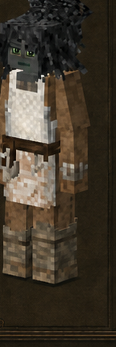
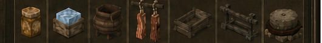

Carnicero
Butcher · código oficial
butcher · ficha 04/16
Rasgos: 7
Bonus: 9
Malus: 5
Recetas: 40

Resumen humano
soporte alimentario por carne/conservación. Necesita fauna, hielo o ganadería para brillar.
Esta línea es interpretación funcional breve; lo importante son los números y recetas de abajo.
Bonus objetivos
- drop de carne: **+100%** (valor interno `1`)
- drop/rendimiento de animales: **+50%** (valor interno `0.5`)
- multiplicador de regeneración curativa: **+100%** (valor interno `1`)
- probabilidad de sal gema: **+10%** (valor interno `0.1`)
- probabilidad/drop de hielo de lago: **+100%** (valor interno `1`)
- rango de detección/agresión de animales: **-25%** (valor interno `-0.25`)
- saciedad de comidas preparadas: **+50%** (valor interno `0.5`)
- saciedad máxima: **+100%** (valor interno `1`)
- velocidad picando hielo: **+100%** (valor interno `1`)
Malus objetivos
- daño contra animales: **-25%** (valor interno `-0.25`)
- drop de frutales: **-75%** (valor interno `-0.75`)
- drop de semillas cultivadas: **-75%** (valor interno `-0.75`)
- drop de semillas/brotes de árbol: **-75%** (valor interno `-0.75`)
- saciedad de comida simple: **-25%** (valor interno `-0.25`)
Rasgos oficiales y efectos reales
| Rasgo | Tipo | Datos objetivos |
|---|---|---|
Saqueadorreaver | positivo | multiplicador de regeneración curativa: +100% (interno 1) |
Carnicerobutcher | positivo | sin atributos numéricos en traits.json; desbloqueo/rasgo de receta |
Conservadorpreserver | positivo | velocidad picando hielo: +100% (interno 1)probabilidad/drop de hielo de lago: +100% (interno 1)probabilidad de sal gema: +10% (interno 0.1) |
Ganaderorancher | positivo | drop de carne: +100% (interno 1)drop/rendimiento de animales: +50% (interno 0.5)rango de detección/agresión de animales: -25% (interno -0.25) |
Cocinerochef | positivo | saciedad de comidas preparadas: +50% (interno 0.5)saciedad máxima: +100% (interno 1) |
Recolector pobrescourer | negativo | drop de semillas cultivadas: -75% (interno -0.75)drop de semillas/brotes de árbol: -75% (interno -0.75)drop de frutales: -75% (interno -0.75) |
Golosogourmand | negativo | daño contra animales: -25% (interno -0.25)saciedad de comida simple: -25% (interno -0.25) |
Recetas / desbloqueos
23mesa normal
1estación
16compatibilidad
40salidas listadas
Categorías detectadas
Butchering: herramientas de carnicería: 8Curado y secado: 6Ganadería: 6Comida para animales: 4Primitive Survival: curado: 4Conservación de alimentos: 3Food Shelves: almacenamiento en frío: 3Molienda: 1Utensilios de cocina: 1Molino manual: 1Selladores: 1Cuba de mezclas y alquimia: 1A Culinary Artillery: colgado y secado: 1
Ver salidas exactas de recetas de esta clase (40)
| Modo | Categoría legible | Resultado legible | Nombre ES |
|---|---|---|---|
| mesa de crafteo normal | Curado y secado | Salt ×4 | — |
| mesa de crafteo normal | Curado y secado | Bushmeat cured ×1 | — |
| mesa de crafteo normal | Curado y secado | Redmeat cured ×1 | — |
| mesa de crafteo normal | Curado y secado | Poultry cured ×1 | — |
| mesa de crafteo normal | Curado y secado | Fish cured ×1 | — |
| mesa de crafteo normal | Curado y secado | Redmeat vintage ×1 | — |
| mesa de crafteo normal | Comida para animales | Universalherbivorefeed ×8 | — |
| mesa de crafteo normal | Comida para animales | Universalherbivorefeed ×8 | — |
| mesa de crafteo normal | Comida para animales | Universalcarnivorefeed ×8 | — |
| mesa de crafteo normal | Comida para animales | Universalcarnivorefeed ×8 | — |
| mesa de crafteo normal | Molienda | Flour grain ×2 | — |
| mesa de crafteo normal | Utensilios de cocina | Ceramiccauldron color fired ×1 | — |
| mesa de crafteo normal | Conservación de alimentos | Icepack ×4 | — |
| mesa de crafteo normal | Conservación de alimentos | Icepack ×4 | — |
| mesa de crafteo normal | Conservación de alimentos | Icepack ×4 | — |
| mesa de crafteo normal | Molino manual | Quern piedra ×1 | — |
| mesa de crafteo normal | Ganadería | Trapcrate Madera y carpintería ×1 | — |
| mesa de crafteo normal | Ganadería | Stationarybasket este ×1 | — |
| mesa de crafteo normal | Ganadería | Stationarybasket este ×1 | — |
| mesa de crafteo normal | Ganadería | Trough genericwood small norte-sur ×1 | — |
| mesa de crafteo normal | Ganadería | Trough genericwood large casco norte ×1 | — |
| mesa de crafteo normal | Ganadería | Henbox ×1 | — |
| mesa de crafteo normal | Selladores | Sealant ×16 | — |
| estación especial | Cuba de mezclas y alquimia | Salt ×4 | — |
| receta de compatibilidad | A Culinary Artillery: colgado y secado | Meathooks Madera y carpintería metal este ×1 | — |
| receta de compatibilidad | Butchering: herramientas de carnicería | Butchertable primitive norte ×1 | — |
| receta de compatibilidad | Butchering: herramientas de carnicería | Butchertable simple norte ×1 | — |
| receta de compatibilidad | Butchering: herramientas de carnicería | Butchertable advanced norte ×1 | — |
| receta de compatibilidad | Butchering: herramientas de carnicería | Butcherhook sílex norte ×1 | — |
| receta de compatibilidad | Butchering: herramientas de carnicería | Butcherhook material norte ×1 | — |
| receta de compatibilidad | Butchering: herramientas de carnicería | Butcherhook iron norte ×1 | — |
| receta de compatibilidad | Butchering: herramientas de carnicería | Smokingrack copper norte ×1 | — |
| receta de compatibilidad | Butchering: herramientas de carnicería | Smokingrack iron norte ×1 | — |
| receta de compatibilidad | Food Shelves: almacenamiento en frío | Meatfreezer normal este ×1 | — |
| receta de compatibilidad | Food Shelves: almacenamiento en frío | Fruitcooler normal este ×1 | — |
| receta de compatibilidad | Food Shelves: almacenamiento en frío | Coolingcabinet normal este ×1 | — |
| receta de compatibilidad | Primitive Survival: curado | Curedsmokedmeat fish raw ×1 | — |
| receta de compatibilidad | Primitive Survival: curado | Curedsmokedmeat bushmeat raw ×1 | — |
| receta de compatibilidad | Primitive Survival: curado | Curedsmokedmeat poultry raw ×1 | — |
| receta de compatibilidad | Primitive Survival: curado | Curedsmokedmeat redmeat raw ×1 | — |
Archivos de esta ficha
Markdown corregido · PNG corregido · Fuente objetiva original si existe
{kind=link}